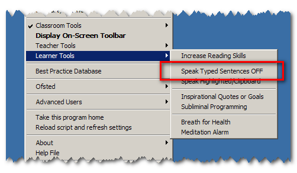

Speak Typed Sentences
You can turn this feature on/off by selecting it from the Learner Menu:

This will read each sentence back to you after you have finished typing. The Teacher Toolkit works across all your text editors, such as: Word, Notepad, Wordpad or your Email program.
This feature aids learning by helping improve your spelling, and increasing your creativity.
Reading back each letter or word, reduces a learner's train of thought; however, by having each typed sentence read back, learners can continue to check their work and still maintain a level of flow.
Some dyslexics find this keeps them focused and helps them to recap their ideas, while simultaneously providing a prompt for the next sentence.